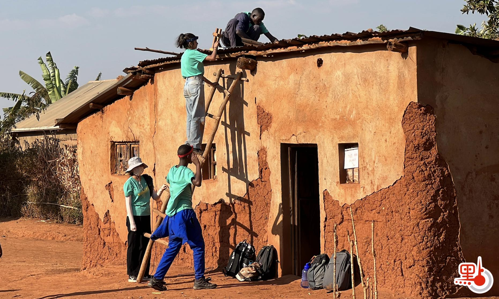
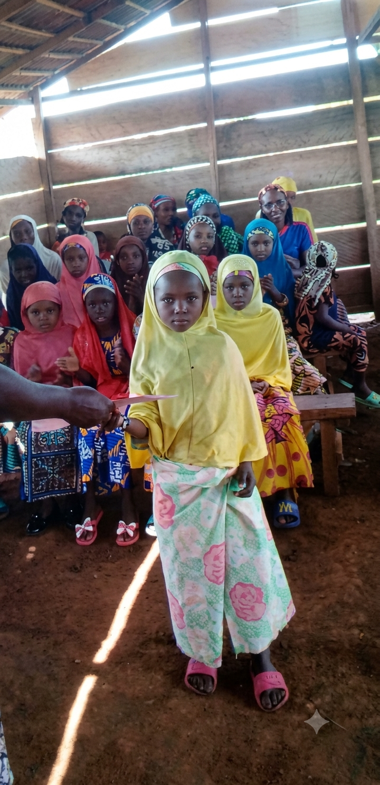
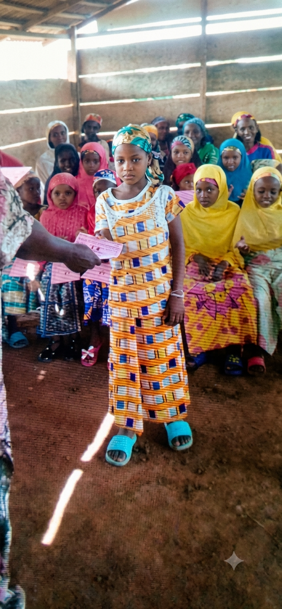
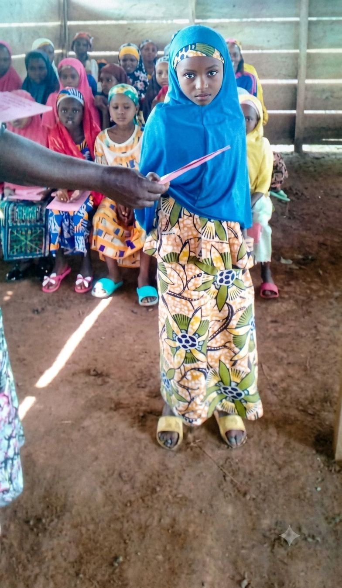
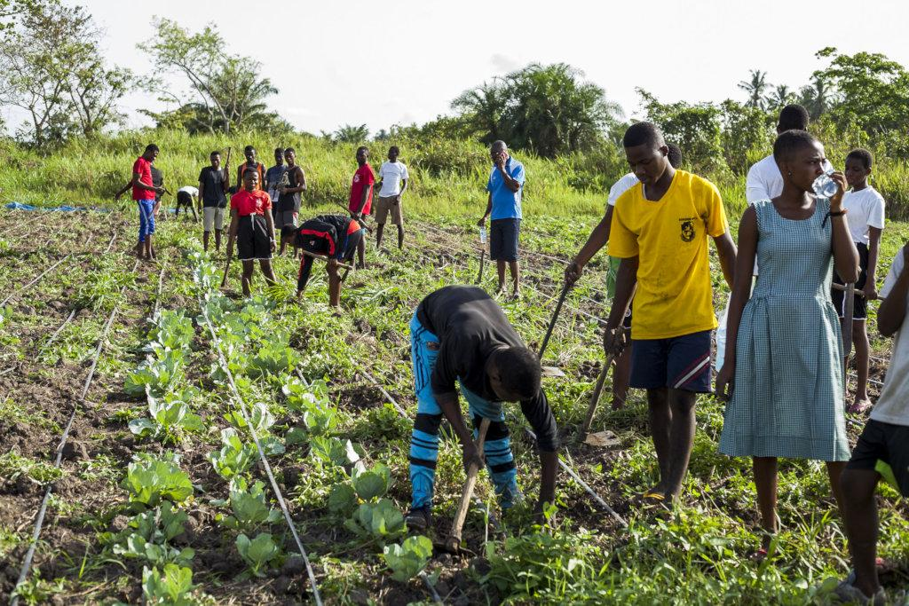

Rénovation d'habitations
APRODEC a remis en état des habitations de membres de la communauté en difficulté, notamment les toitures, les murs et les portes. Le chantier a été mené avec les bras et les moyens de la communauté.
Trois façons d'agir pour un même but, que chaque membre de la communauté vive mieux.
Rénovation d'habitations, dons aux familles, aide aux plus démunis, école pour les Bororos.
Assemblées, repas partagés, retrouvailles. Garder le lien, même loin de Bertoua.
Formation des jeunes, accompagnement d'activités qui font vivre ceux qui les lancent.
Apprendre ne devrait dépendre ni de l'origine, ni du lieu où l'on naît.
APRODEC a créé une école à caractère social destinée aux Bororos, que l'on appelle aussi les minorités. Elle répond à un besoin réel de la communauté, sans but lucratif, avec une idée simple, ouvrir la porte de l'instruction à celles et ceux qui en restent souvent éloignés.



Les dates des assemblées, des retrouvailles et des chantiers seront affichées ici dès qu'elles seront fixées.
Rien d'annoncé pour le moment. Pour être prévenu des prochaines dates, rejoignez l'association.
Aucune activité dans cette rubrique pour le moment.

APRODEC a remis en état des habitations de membres de la communauté en difficulté, notamment les toitures, les murs et les portes. Le chantier a été mené avec les bras et les moyens de la communauté.
Des dons ont été remis à des familles qui en avaient besoin. Une aide directe, remise en main propre, sans intermédiaire.

Des jeunes ont été formés aux travaux champêtres pour acquérir un savoir-faire et démarrer leur propre activité. Une réponse concrète au chômage des jeunes.
Dates et lieux à compléter avec les informations réelles de l'association.
Proposez-la, ou venez donner un coup de main.